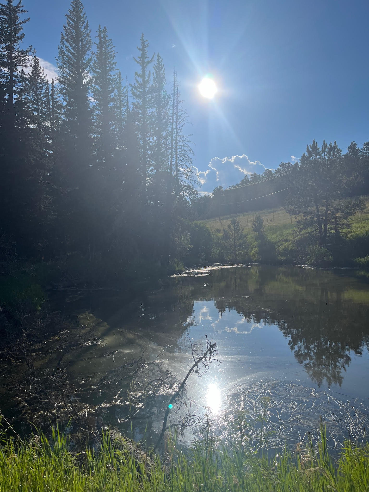
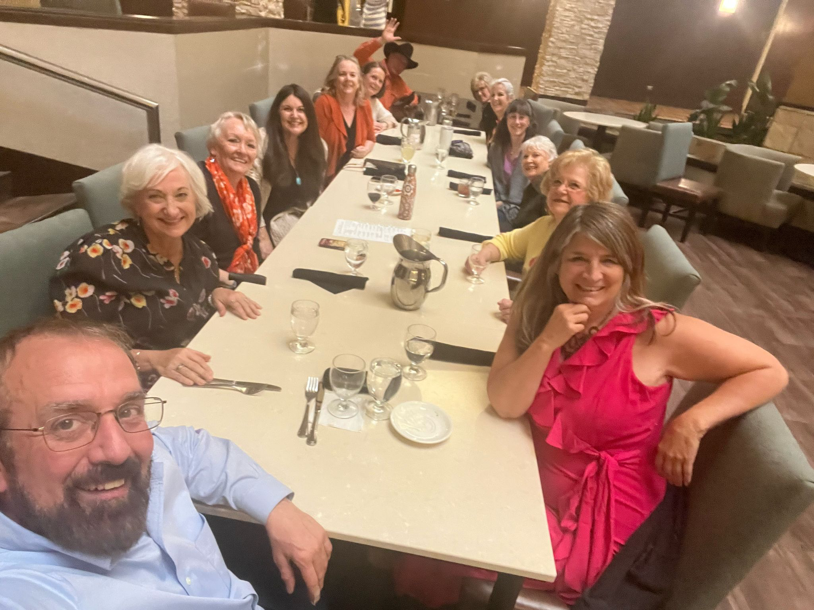
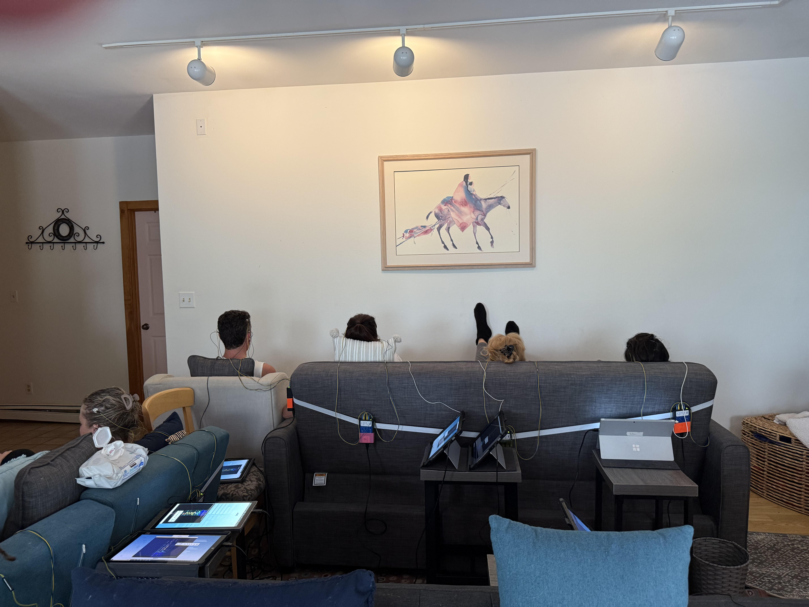

Regeneration begins with biology.
A clinical philosophy environment — grounded in the neurobiology of wellness, the biology of cellular delivery, and what it takes to genuinely reset.

74% of your circulatory system is microvascular. This is where every cell receives oxygen, nutrients, and hormones — and where the drift begins, long before a diagnosis forms.
Chronic sympathetic dominance is a biological pattern, not a character flaw. Changing it requires direct physiological intervention — not willpower or strategy alone.
The body moves toward balance when given the conditions. Our work is creating those conditions — through environment, precise protocol, biology education, and community.
Most approaches address symptoms. We address the foundational system that leads to symptoms — the delivery infrastructure that every cell, hormone, and healing process depends on.
This is not an immersion in the conventional sense. It is a carefully structured environment in which your biology can recalibrate. The land does work. The body responds to the interventions. The community is small by design.
74% of your circulatory system is microvascular — where oxygen, nutrients, and hormones actually reach cells. When this system weakens, everything downstream suffers, long before labs reflect it.
Chronic sympathetic dominance constricts microvessels and suppresses vasomotion — the rhythmic pulsation that drives cellular delivery. Nervous system support is not optional — it is structural.
The brain's waste clearance system operates during deep sleep via microcirculation-dependent flow. Cognitive restoration, mood stability, and long-term neurological health depend on this system.
This is not a causal claim — it is a positional one. Microcirculation sits upstream of nearly every organ system. When delivery is compromised, consequences appear throughout the body under many different names.
Different symptoms. Same foundational system. Different diagnoses. Same upstream insufficiency.
Two direct, evidence-based tools. Neurofeedback trains the brain toward more coherent, regulated states in real time — shifting the patterns that keep the nervous system stuck in chronic activation. Microcirculation optimization restores the delivery infrastructure that determines whether those shifts can hold.
Neither is a workaround. Together they address the two systems — neural regulation and cellular delivery — that determine whether the body can genuinely recover. This is the clinical core of everything offered at Dragonfly Ranch.
Set on a forested property near Boulder, Colorado, Dragonfly Ranch is selected for its measurable biological impact. Time in this environment supports nervous system regulation, reduces cortisol, and improves overall physiological stability.
The land is not a backdrop. It is part of the intervention.

Community · Dragonfly Ranch
NFB · Neurofeedback in SessionSame biology. Different entry.
A 5-day immersion built around your physiology — not your performance. Return to practice anchored in your own biology first.
A 5-day immersion at Dragonfly Ranch. Biology-first regenerative care in a forested environment designed to activate your capacity to rest and digest.
Same foundational system.
"You've been trying hard enough.— Brighten Your Being
The missing piece wasn't effort.
It was delivery."
Every protocol in the Brighten Your Being ecosystem addresses these three biological systems — because together they determine cellular function, cognitive performance, and recovery capacity.
The 74% of your circulatory system that determines whether oxygen, nutrients, and hormones actually reach cells — the foundational delivery layer of every biological process.
The brain's waste management system — active during deep sleep, dependent on microcirculation. Cognitive restoration and long-term neurological health require this system to function as designed.
Cellular energy production — the mechanism by which oxygen becomes capacity. When mitochondria are supported, fatigue resolves, metabolism normalizes, and healing accelerates.
Brighten Your Being is a framework, a place, and a community — each expression grounded in the same biological precision.
The Brighten Your Being framework emerged from more than three decades at the intersection of neurobiology, trauma, and family systems — and from the personal experience of navigating what standard medicine couldn't explain.
Biology first. Then everything else. This orientation predates the clinical framework — it came from watching what actually worked in real bodies over real time.
Two cohorts. Two paths. One biological framework that changes how everything else works.